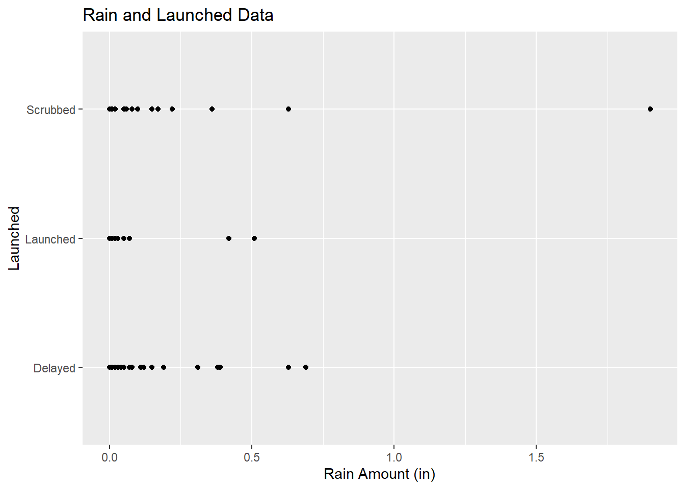
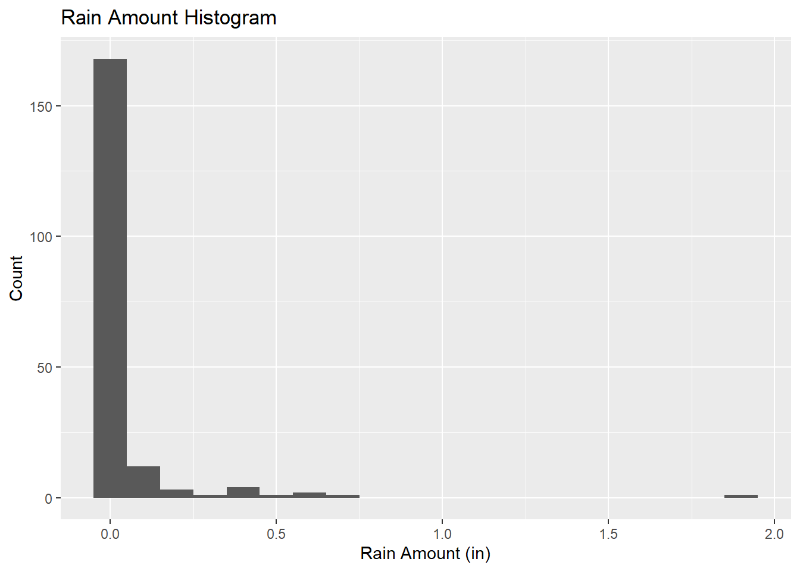
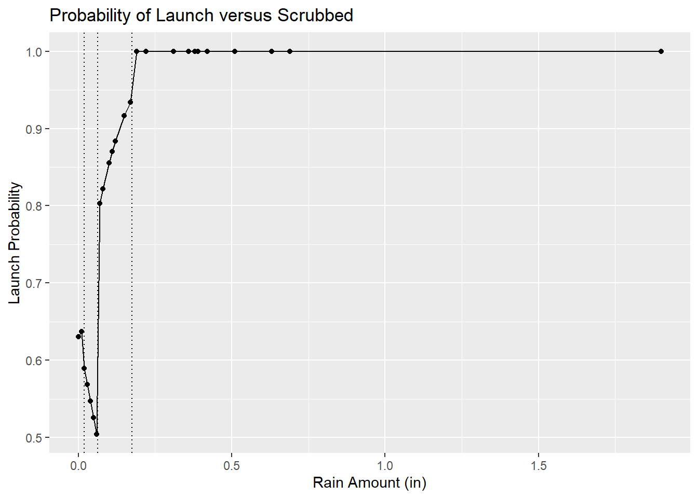
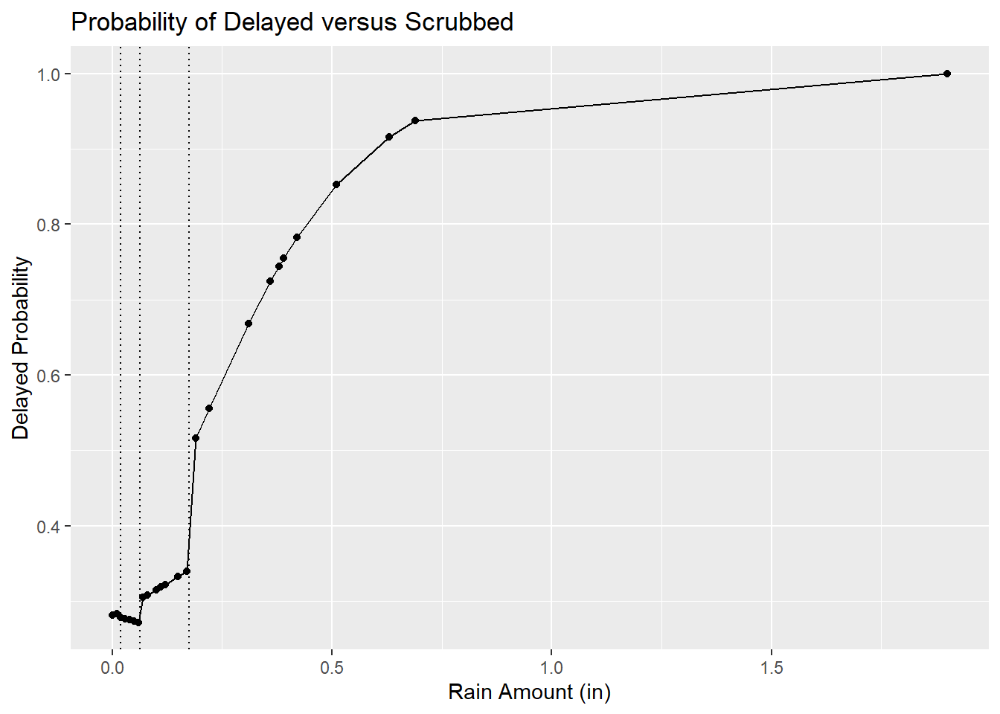

Chapter 4 Data and Methods
2.1 Data Description Gathering data and data management was the most prevalent obstacle. Converting the data from its different formats to a usable sheet was a long and tedious procedure.
The first data set collected was rain amount. This data was collected from the Space Weather Archive. The data set was the largest with over 3600 points across 10 years. It is important to note that there are clear misreadings in the data set and times with no data due to maintenance. These points did not seem to overlap many if any of the data points of interest.
The second data set collected was the successful launch records. The data was provided by Space Launch Delta 45 out of the Patrick Space Force Base Public Affairs office. This data set includes successful launches from 2010-2020 with launches from land-based pads and sea vessels. This also means the inclusion of intercontinental ballistic missiles was in the data set. The data were filtered to exclude the years 2010 and 2020. Then any launch that was not at LC-39, SLC-40, and SLC-41 was also excluded. There were 193 data points of interest after the data was filtered.

Map of Cape Canaveral Launch pads provided by reddit user u/TransitRanger_327
The last data set collected was scrubbed and/or delayed launch records. This was the hardest data set to collect. Delayed and scrubbed launches are not as well documented nor are talked about. Fortunately, there is a website created by Jonathan C. McDowell with the collaboration of many colleagues who have access to databases not easily attained by the public gave access to a comprehensive list of orbit and suborbital space launches. This data was originally collected to find trends of interest such as scrubbed launches on Friday the 13th and if the moon phase happened to add to the chance of scrubs. This data set may have a problem in accuracy but not in false data but missed data points because it has been run through in compared to other data banks to check for consistency. The problem is the data is compared in one direction for consistency and not missing data.
Once successful, delayed, and scrubbed data was collected it was combined into one data set. For the purposes of this project, the launch categories are defined as follows: a successful launch is an on-time launch; a delayed launch is a launch that happened the same day as the scheduled on-time launch but was delayed for various reasons; a scrubbed launch is a launch that has been canceled or delayed past its original launch day. There were 193 points of interest. 117 points of delayed launches, 29 points of successful launches, and 47 points of scrubbed launches. The launch category is split into three numerical terms. A 0 indicates that the launch was scrubbed, a 1 indicates the launch was successful, and a 2 indicates the launch was delayed. Some keynotes with the collected data is that there is a data point at 1.9 in of rain which sits far from the other points, upon further research this is a legitimate point. Also for this study a successful launch being defined as launch in the original launch window there are cases of a successful launch where the rocket had a failure during flight, this is still considered a successful launch here.
2.2 Models and Assumptions
2.2.1 Logistic Regression The first thing we looked at was logistic regression with the outcomes of successful, scrubbed, and delayed launch. When making a logistic model we look at the probability of one event occurring in comparison to another event. For this study the base event was scrubbed launches. \[ \begin{equation} \ln\left(\frac{\pi_j}{\pi_c}\right)=\beta_0+\beta_1X_1+...+\beta_iX_i\tag{1} \end{equation} \]
where \(j=1,...,c-1\) and where \(i = 1,..., k\) and \(k\) is the number of predictors in the model
- \(\pi_j\) is the event group
- \(\pi_c\) is the reference group
2.2.2 Spline Model Unlike a normal regression model that uses a constant slope to model the data we used a spline regression model to use different slopes at different ranges of indicators. This allowed us to better analyze the difference in probabilities at different ranges of rain amount. For this we created our knots, ranges, by splitting the data into quartiles. There are other ways to create knots but for this study and simplicity we decided to use quartiles.
\[ \begin{equation} y= \beta_0 + \beta_1X_1+...+\beta_iX_i\tag{2} \end{equation} \] \[X_1 = \left\{\begin{array}{ll} 1 & \text{if }x \in (min,25^{th}) \\ 0 & \text{otherwise} \end{array} \right.\] \[X_2 = \left\{\begin{array}{ll} 1 & \text{if }x \in (25^{th},50^{th}) \\ 0 & \text{otherwise} \end{array} \right.\] \[X_3 = \left\{\begin{array}{ll} 1 & \text{if }x \in (50^{th},75^{th}) \\ 0 & \text{otherwise} \end{array} \right.\] \[X_4 = \left\{\begin{array}{ll} 1 & \text{if }x \in (75^{th},max) \\ 0 & \text{otherwise} \end{array} \right.\]
2.2.3: Multinomial Logistic Spline Regression With a combination of the multinomail and spline regression we get our model of interest for this study.
\[ \begin{equation} \ln\left(\frac{\pi_j}{\pi_c}\right)= \beta_0 + \beta_1X_1+ \beta_2X_2+ \beta_3X_3+\beta_4X_4\tag{3} \end{equation} \]
where \(j=1,...,c-1\) and where \(i = 1,..., k\) and \(k\) is the number of predictors in the model
\(\pi_j\) is the event group
\(\pi_c\) is the reference group
\(X_i\) are the predictors
\(\beta_0\) is the regression intercept
\(\beta_i\) is the slope of predictor \(i\)
2.3 Analysis and Results The model

Figure 2.1 Data of Study

Figure 2.2 Distribution of Rain amount
From Figure 2.1 you can see there is a lot of data points at the zero rain amount. To investigate this we created a histogram, Figure 2.2, to look at the distribution of rain amount and concluded there is clearly a lot more zeros in this data set that will be usable to create our knots. When first creating a five number summary with the zeros in the data the 25th, 50th, and 75th percentile were all zeros. With these knots the model essential became a regression model with one slope. Due to this we decided to remove the zeros when assessing the quartiles. The majority of these launches were related to the Falcon 9 launch which is not surprising given the goal of this rocket. The CEO of SpaceX, Elon Musk, goal with this rocket is to be able to launch multiple times a day and currently they are on a very rapid schedule with a record rocket turn around time record of 27 days and record of 16 hours for launching two different rockets [8]. This adds plenty opportunities for scrubbed and delayed launches to stack up on no rain days adding to the excessive no rain data points. With the elimination of the zeros the new quartiles used were 0.019, 0.064, and 0.175 respectfully. The spline models created for this example have been made with with the reference point of scrubbed launches.
\[x_1 = 1 \text{ if rain }\in (0, 0.019), 0 \text{ otherwise}\] \[x_2 = 1 \text{ if rain } \in (0.020, 0.064), 0 \text{ otherwise}\] \[x_3 = 1 \text{ if rain } \in (0.065, 0.175), 0 \text{ otherwise}\] \[x_4 = 1 \text{ if rain } \in (0.175, 1.90), 0 \text{ otherwise}\]
\[ \begin{equation} \ln\left(\frac{\hat{\pi}_{\text{scrub}}}{\hat{\pi}_{\text{launch}}}\right)=0.53+3.00X_1-8.58X_2+12.44X_3+36.59X_4\tag{4} \end{equation} \]
Model 2.1
Model 2.1 is looking at the probability of scrubbed versus launched given the rain amount.
 Figure 2.3
In figure 2.3 the vertical dotted lines represent the different knots in the model. The first vertical line represents the knot at 0.019; the second vertical line represents 0.064; the third vertical line represents 0.175. From figure 2.3 we can see an interesting occurrence where the the chance of a scrubbed launch decrease from 0.019 inches to 0.064 inches of rain. There does not seem to be a responsible explanation for this other than just a lack of data between the points. Even with this sharp increase in the visual model, the chances of a successful launch with an presence of rain is still less than 50% with anything greater than 0.175 inches practically 0%.
Probability of Scrubbed versus Launched
| Predictor | \(\hat{\beta}\) | (\(95\)% CI) |
|---|---|---|
| \(X_1\) \((0,0.019)\) | \(3.00\) | \((-6.85, 0.86)\) |
| \(X_2\) \((0.02,0.064)\) | \(8.58\) | \((-4.54, 21.71)\) |
| \(X_3\) \((0.065,0.175)\) | \(12.44\) | \((-41.41, 16.53)\) |
| \(X_4\) \((>.175)\) | \(36.59\) | \((-104.88, 31.70)\) |
- Partial F-test: p=0.338
\[ \begin{equation} \ln\left(\frac{\hat{\pi}_{\text{scrub}}}{\hat{\pi}_{\text{delay}}}\right)= -0.94+0.70X_1-0.80X_2+1.60X_3+5.28X_4\tag{5} \end{equation} \]
Model 2.2
Model 2.2 is looking at the probability of a delayed launch versus a scrubbed launch given the rain amount.
 Figure 2.4
In figure 2.4 the vertical dotted lines represent the different knots in the model. The first vertical line represents the knot at 0.019 inches; the second vertical line represents 0.064 inches; the third vertical line represents 0.175 inches. From figure 2.4 we can see the same interesting occurrence from figure 2.3 where there is an decrease probability from 0.019 inches to 0.064 inches of rain. Again there is no practical explanation of this phenomenon. This model does show that with light rain there is still a considerable chance that the rocket will launch that day, just of course delayed. Looking back at the ambitious goal of some of the rockets being launched makes sense because a goal is to prove the ability to do consistent launches. The likelihood of a scrubbed launch is significantly increase passed the 0.175 in mark, reminding us regardless of how much a company wants to launch, there are still limitations.
| Predictor | \(\hat{\beta}\) | (\(95\)% CI) |
|---|---|---|
| \(X_1\) \((0,0.019)\) | \(0.70\) | \((-2.30,0.91)\) |
| \(X_2\) \((0.02,0.064)\) | \(0.80\) | \((-3.91,5.52)\) |
| \(X_3\) \((0.065,0.175)\) | \(1.60\) | \((-8.48,5.28)\) |
| \(X_4\) \((>.175)\) | \(5.28\) | \((-20.20,9.64)\) |
- Partial F-test: p=0.338